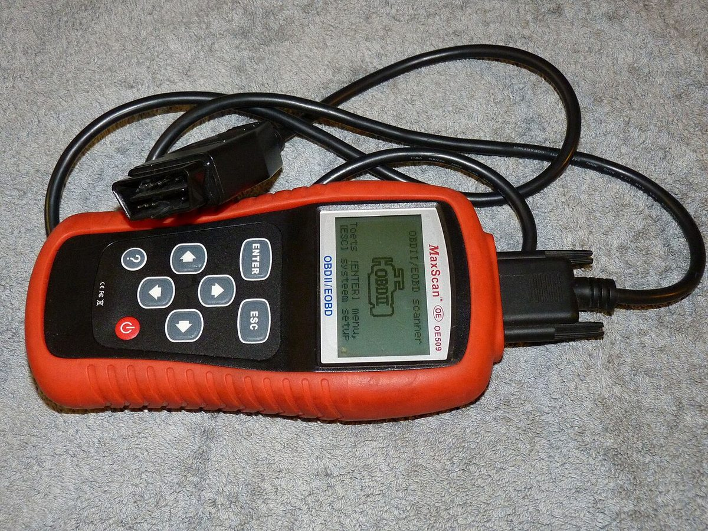

Poradňa autoservisu autoZ
Diagnostika auta pred kúpou
Jazdené auto môže na prvý pohľad vyzerať bez chyby, no riadiace jednotky si pamätajú viac, ako ukáže palubná doska. Diagnostika auta pred kúpou spolu s prehliadkou a skúšobnou jazdou vám pomôže rozhodnúť sa s menším rizikom.

Predávajúci nedovolí diagnostiku ani prehliadku, chyby boli zjavne nedávno vymazané a nevie to vysvetliť, stav kilometrov v jednotkách nesedí s tachometrom alebo sú chyby v systéme airbagov.
Drobné uložené chyby, napríklad slabá batéria alebo jeden snímač, sa dajú vyriešiť. Dajte si ich vysvetliť a zohľadnite ich pri dohadovaní ceny.
Čo diagnostika pred kúpou ukáže
Tester sa pripojí do diagnostickej zásuvky a prečíta údaje zo všetkých riadiacich jednotiek, ktoré auto má – nielen motora, ale aj prevodovky, ABS a ESP, airbagov, klimatizácie či komfortnej elektroniky. Lacná OBD čítačka vidí väčšinou len motor a emisie.
| Čo sa kontroluje | Čo môže prezradiť | Poznámka |
|---|---|---|
| Chybová pamäť všetkých jednotiek | súčasné aj staršie poruchy, ktoré na palubnej doske nesvietia | dôležité je aj, koľkokrát sa chyba vyskytla |
| Testy pripravenosti (readiness) | nedávne vymazanie chýb – po vymazaní nie sú testy dokončené | dokončia sa až po niekoľkých jazdách |
| Stav kilometrov v ďalších jednotkách | nesúlad s tachometrom | len pri autách, ktoré ho ukladajú aj inde |
| Filter pevných častíc (naftové motory) | zanesenie filtra, problémy s regeneráciou | dôležité pri autách jazdených najmä v meste |
| Hodnoty motora za chodu | korekcie vstrekovačov, tlak plniaceho vzduchu, prisávanie | porovnáva sa s hodnotami výrobcu |
| Automatická prevodovka | chyby, teplota oleja, adaptácie | dopĺňa skúšobnú jazdu |
| Airbagy a bezpečnostné systémy | chyby po neodbornej oprave, pri niektorých autách záznam o náraze | chyba airbagu je vážna |
| Batéria a nabíjanie | slabá batéria, porucha alternátora | slabá batéria spôsobuje aj iné chyby |
Čo diagnostika neodhalí
Počítač nevidí mechanické opotrebenie, ktoré nesleduje žiadny snímač: hrdzu, vôle v podvozku, opotrebované tlmiče, úniky oleja, stav bŕzd a pneumatík ani opravy karosérie po nehode. Preto má diagnostika pred kúpou zmysel len spolu s prehliadkou auta na zdviháku a skúšobnou jazdou.
Diagnostika tiež nepovie nič o servisnej histórii. Pýtajte si servisnú knižku, faktúry z opráv a protokoly z technickej a emisnej kontroly, kde je zapísaný stav tachometra.
Ako postupovať pri kúpe jazdeného auta
- Overte si doklady a VIN – musí sedieť v technickom preukaze aj na aute.
- Dohodnite si obhliadku tak, aby motor bol studený. Pri studenom štarte sa ukážu zvuky aj dym, ktoré zahriaty motor skryje.
- Dajte urobiť diagnostiku všetkých riadiacich jednotiek, nielen motora.
- Nechajte auto prehliadnuť na zdviháku – podvozok, brzdy, úniky, hrdza, výfuk.
- Absolvujte skúšobnú jazdu: radenie, spojka alebo automatická prevodovka, brzdenie, zvuky pri zatáčaní a na nerovnostiach.
- Výsledky si dajte vysvetliť a rozhodnite sa – kúpiť, zjednať cenu podľa potrebných opráv, alebo odstúpiť.
Vymazané chyby pred predajom
Chybu sa dá vymazať aj lacnou čítačkou a kontrolka na palubnej doske zhasne. Vymazanie však vynuluje aj testy pripravenosti, ktoré sa dokončia až po určitom čase jazdy. Keď diagnostika ukáže nedokončené testy, chyby boli pravdepodobne nedávno vymazané. Viac o tom, ako diagnostika funguje, nájdete na hlavnej stránke diagnostika-auta.sk.
Časté otázky
Má zmysel diagnostika pred kúpou jazdeného auta?
Áno. Ukáže uložené chyby vo všetkých riadiacich jednotkách a stav testov pripravenosti, ktoré môžu prezradiť nedávne vymazanie chýb. Spolu s prehliadkou a skúšobnou jazdou výrazne znižuje riziko zlej kúpy.
Dá sa zistiť, že predajca vymazal chyby?
Často áno. Po vymazaní chýb sa vynulujú testy pripravenosti a dokončia sa až po niekoľkých jazdách. Nedokončené testy sú signál, že chyby boli nedávno vymazané.
Odhalí diagnostika stočené kilometre?
Nie vždy. Pri niektorých autách sa stav kilometrov ukladá vo viacerých jednotkách a nesúlad sa dá zistiť. Spoľahlivejšie je porovnať údaje so servisnou históriou a protokolmi z technickej kontroly.
Stačí len diagnostika?
Nie. Diagnostika neodhalí hrdzu, vôle v podvozku, úniky ani opravy po nehode. Patrí k nej prehliadka na zdviháku a skúšobná jazda.
Kde v Trenčíne urobia diagnostiku pred kúpou?
V autoservise autoZ na ulici gen. M. R. Štefánika 6670/19 v Trenčíne, pri Kauflande. Objednať sa môžete na 0910 606 999 alebo online na autoz.sk/rezervacia.
Kupujete jazdené auto? Skontrolujeme ho pred kúpou.
Diagnostiku všetkých riadiacich jednotiek aj prehliadku auta robíme v autoservise autoZ v Trenčíne. Zavolajte alebo sa objednajte online – s predávajúcim si dohodnite, že auto privezie k nám.
autoZ – autoservis Zelman · gen. M. R. Štefánika 6670/19, 911 01 Trenčín (pri Kauflande)
Tel. 0910 606 999 · Po–Pi 8:00–16:30
Viac na autoz.sk: Diagnostika auta Trenčín